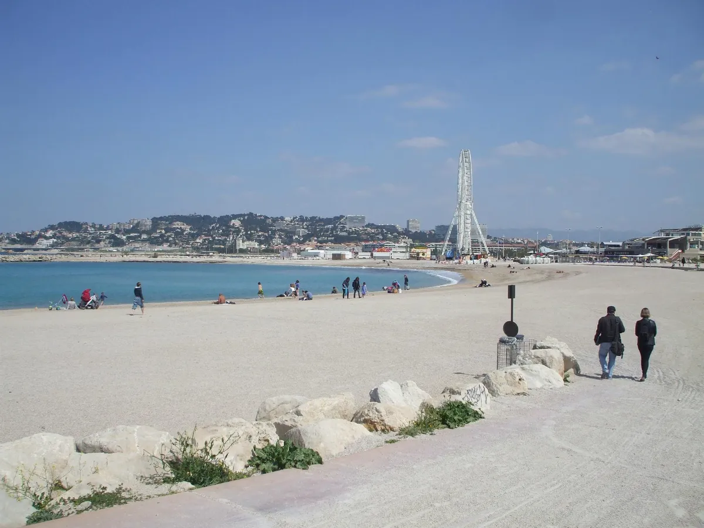
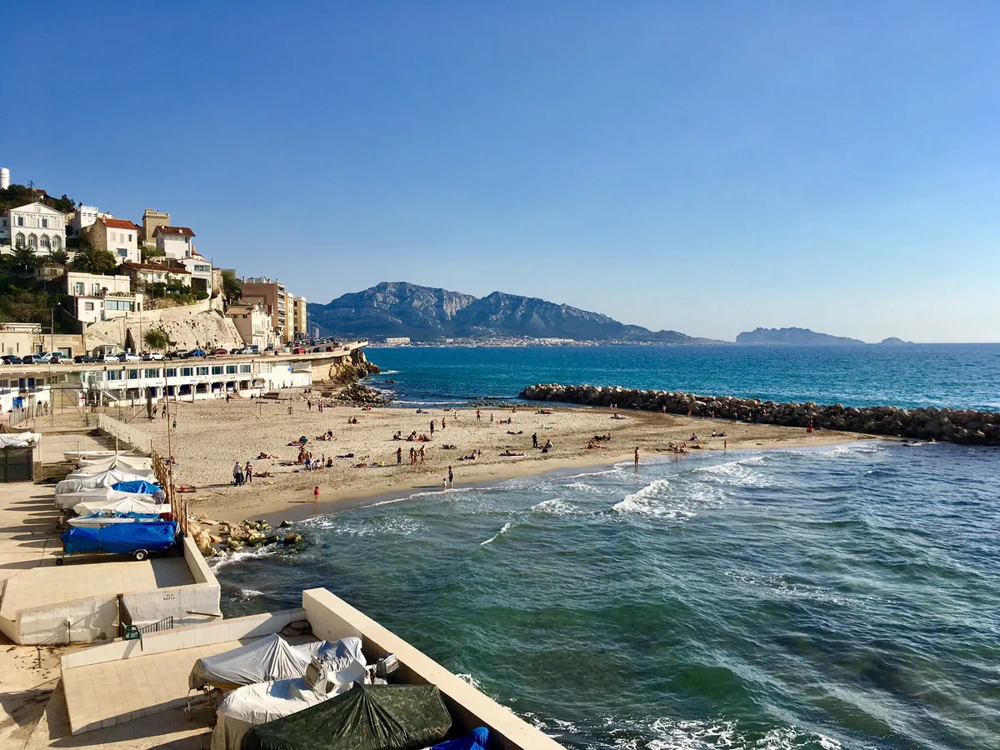

Dans le quartier mythique de l’Estaque se trouvent les seules plages des quartiers Nord. Un ensemble de trois plages qui se suivent après l’Estaque. L’avantage de ces plages est qu’elles sont propres même en été, faciles d’accès, suffisamment grandes et avec une vue magnifique sur tout Marseille.

Familiale, la plage de la Pointe rouge dispose de toutes les installations nécessaires à des après-midi réussis. Bordée par de petits restaurants aux produits simples mais qualitatifs et par des cabanons colorés mis à la disposition des vacanciers, elle saura vous accueillir pour des journées inoubliables.

En contrebas de la Corniche Kennedy, la Plage du Prophète est une des plages, en libre accès de Marseille. Elle est très célèbre auprès des marseillais mais également connue des touristes car elle convient aux petits et aux grands !
Pour y accéder, il faut traverser le quartier des Baumettes (le mot “baumettes” signifie petites grottes en provençal), pour atteindre la route étroite et sinueuse dans la colline, qui part à l’assaut du col éponyme. Arrivé au col, un sentier de randonnée permet de descendre à la calanque (environ 45 mn de marche) … et un panorama magnifique s’offre à vous.
La plage de St Estève sur l’Île de Frioul se situe sur l’Île de Ratonneau à proximité de l’hôpital Caroline. Unique plage de l’île surveillée en été, elle est très fréquentée avec en moyenne 300 visiteurs par jour à la belle saison. L’eau de baignade y est classé en catégorie « Bon », en nette amélioration depuis 2011.